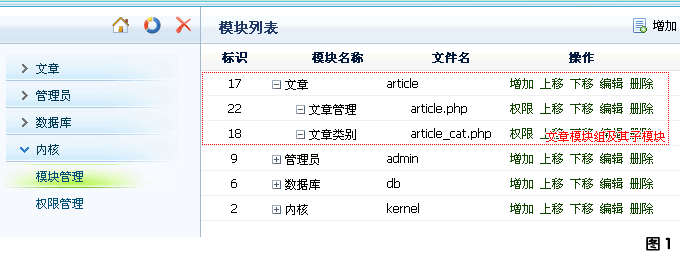

库文件默认全部存放在 /admin/includes/ 文件夹下。通常一个模块组下的所有模块共用一个库文件，其命名方式为："lib_" + "模块组名称" 。
以下图中的 "文章模块组以其子模块"为例，我们需要建立一个库文件：
1. 文章模块组的库文件：/admin/includes/lib_article.php

通常情况下一个模块基本封装的函数有三个：获取列表数据，获取记录数据，删除记录数据。
以下就是一个参考的库文件代码结构：
?php
/* 获取列表数据 */
function list_xxxx( $filter ){
}
/* 获取记录数据 */
function info_xxxx( $filter ){
}
/* 删除记录数据 */
function del_xxxx( $filter ){
}
?